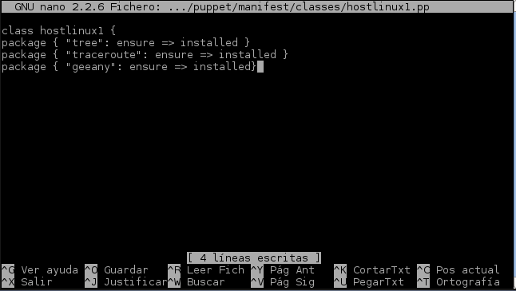

- Módulo: Sistemas Operativos
- Título del trabajo Uso de Puppet por Windows y Linux
- Componentes del grupo: Eliot Farrais García
- Curso Académico: 2014/2015
- Fecha de entrega: 3 de febrero de 2015
Ponemos una IP estática para el Servidor. reiniciamos el sistema

Nos quedará algo así
Pondremos la tarjeta de red del virtual box en modo puente
Modificamos el nombre del fichero /etc/hostname, borrando y poniendo marte.startwars
Mdificamos el fichero /etc/hosts
Modificamos el archivo /etc/resolv.conf
Instalamos puppetmaster en el Cliente
Creamos los siguientes archivos y directorios
Modificamos el fichero readme.txt y le pondremos "¡Que la fuerza te acompañe!"

Modificamos el fichero site.pp
Modificamos el fichero hostlinux1.pp
Reiniciamos el servicio de Puppet
Miramos el archivo syslog para ver si existen errores
Le cambiamos el nombre a la maquina
Luego pondremos y modificaremos el archivo /etc/resolv.conf
Modificamos el archivo /etc/hosts
Hacemos un ping para comprobar la configuración
Modificamos las interfaces de red
Instalamos el puppet con apt-get install puppet
Añadimos lo siguiente a la configuración

Modificamos el archivo puppet
Reiniciamos el servicio
Comprobamos los logs del cliente
Antes de que el master acepte a client1.nombredegrupo, como cliente, se deben intercambiar los certificados.
Vamos al master y consultamos las peticiones

Aceptamos al cliente
Vamos a client1 y ejecutamos el siguiente comando para ver posibles errores
Creamos un nuevo archivo hostlinux2.pp
Añadimos al archivo site.pp el archivo hostlinux2.pp
Comprobamos el resultado final con

Modificamos la Ip, para que esta sea fija
Descargamos Puppet de: https://downloads.puppetlabs.com/windows/

descargamos Ruby para windows (RubyInstaller) ver.:2.1.5
Instalamos Ruby
Abrimos el instalador de Puppet, en master pondremos master.eliot
Creamos un archivo de configuración nuevo para Windows llamado hostlinux3.pp en master
Añadiremos al archivo site la configuración y reiniciamos el servicio
Ejecutamos cmd como administrador y modificamos el archivo hosts
Nos vamos al master y ejecutamos facter miramos la versión de Puppet y comprobamos que es la que nos hemos descargado
Comprobamos que se ha instalado correctamente ejecutando el programa Accesorios->Puppet->facter

Vamos al master y miramos las peticiones para Agregar al cliente de windows (client2)
Añadimos el client2 de manera: puppetca --sign "client2.eliot"
Imprimimos la información de client2
Hacemos ping entre el cliente y el servidor habíendo respuesta
Modificamos el arcivo site.pp
Comprobamos que funciona abriendo el agente cliente desde windows